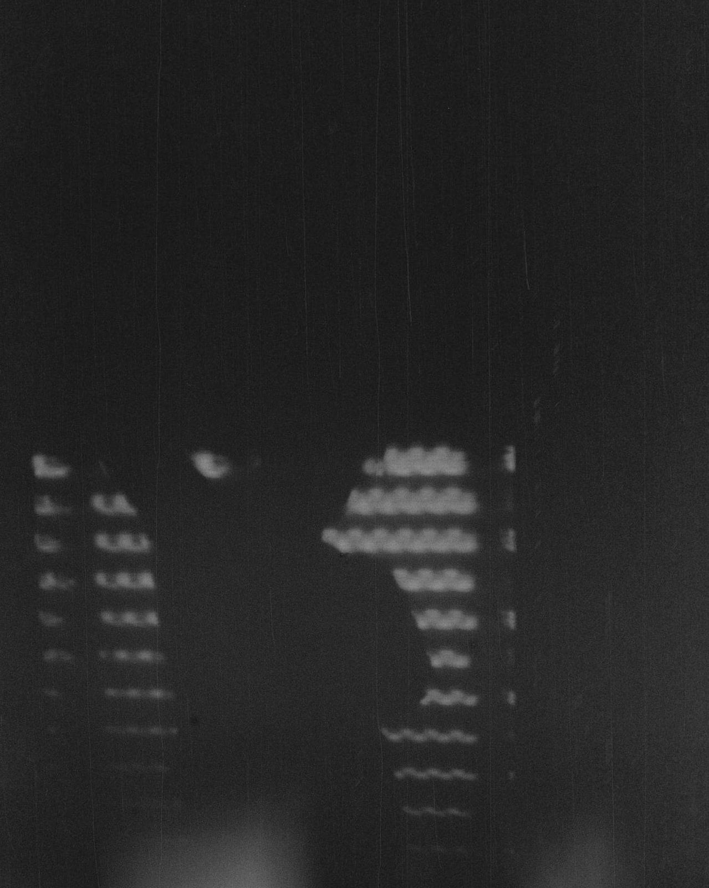

I am a PhD student in Computer Science at DCC-FCUP, under the CMU Portugal Affiliated PhD Program, supervised by Mário Florido, Sandra Alves and Jan Hoffmann. I am also a researcher at LIACC.
My research focuses on providing a foundation for safer computations where resources are carefully managed, through the use of intersection types, and concurrency.
External Reviewer: LSFA 2026